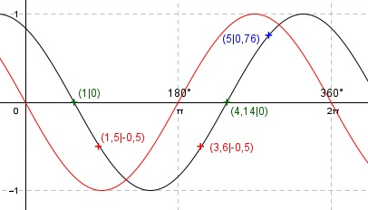

Aufgabe 203
Ergänzen Sie die Wertetabelle für x zwischen 0 und 2π:
y = -sin (x - 1)
x 5 1,5 oder 3,6
y 0,76 -0,5
Amplitude = 1 ; Periode = 2π ;
Phasenverschiebung (siehe unten) = -1 oder -57,3° bedeutet:
-sin x ist um 1 oder 57,3° nach rechts verschoben.
Berechnung der Nullstellen:
-sin (x - 1) = 0 -->
Substitution (x - 1) = u -->
-sin u = 0 -->
u = k * π mit k = 0, 1, 2, ... -->
Rücksubstitution liefert
x - 1 = k * π |+1 -->
x = k * π + 1
x1 = 1 oder 57,3°.
x2 = (π + 1) = 4,14 oder 237,2° gerundet

Funktionswert an einer Stelle x ermitteln:
5 * 180°
x = 5 oder ---------- = 286,5°
π
f(5) = - sin (5 - 1) = - sin (286,5° - 57,3°) = 0,76 gerundet.
Berechnung der x-Werte für y = f(x) = -0,4
f(x) = - 0,5 eingesetzt,existiert für
sin x zwischen 0 und π bzw. 0° und
180° und zwischen π und 2π bzw.
zwischen 180° und 360°.
-sin x = sin(-x) = -0,5 -->
-x = arc sin (-0,5) = -0,52 |*(-1)
x = 0,52 -->
x1 = 0,52
x2 = (π - 0,52) = 2,62 gerundet.
(siehe Einheitskreis)
 Unter Berücksichtigung der Phasenverschiebung:
1,5 * 180°
x1 = (0,52 + 1) = 1,52 (1,5 gerundet) oder ------------ = 85,9°
π
x2 = (2,62 + 1) = 3,62 (3,6 gerundet) und 206,3°.
Unter Berücksichtigung der Phasenverschiebung:
1,5 * 180°
x1 = (0,52 + 1) = 1,52 (1,5 gerundet) oder ------------ = 85,9°
π
x2 = (2,62 + 1) = 3,62 (3,6 gerundet) und 206,3°.